Elements
A slide is a 64×32 grid of LEDs that you build from elements: text, icons, images, shapes, charts, effects and two kinds of container. Here's what each one can do, how they animate, and how they combine, so you can tell whether an idea is possible before you start building it.
What every element can do
Move, resize, recolour and fade
Every element has a box, a colour and an opacity, and all of them can be animated (see Animating).
Show live data
Anywhere you can type text, you can insert a field from a data source, like {{weather.temp}} or {{clock.time}}. The Insert data button lists every field with its current value. Filters tidy values up: {{weather.temp|round}}, {{news.title|upper}}, {{stocks.AAPL.price|comma}}. The Number format menu builds number formats for you.
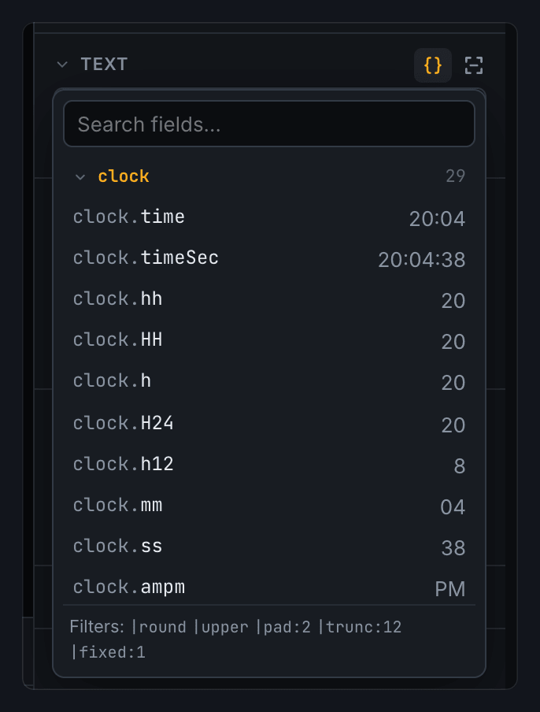
Take its colour from data
Under Colour, choose From data and pick a number, then pick a colour for when it's above, equal to or below a value. A stock's change can be green when it's up and red when it's down.
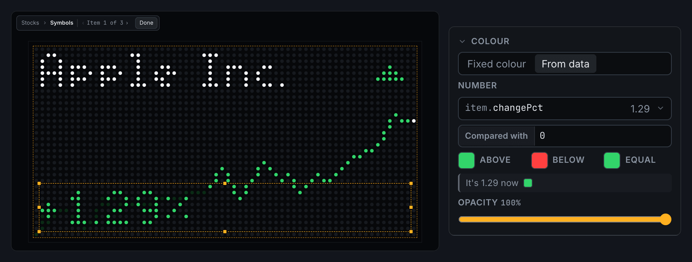
Appear only sometimes
Show only if draws the element only while a field has a value. Put ! in front to draw it only while the field is empty. Use a pair of these to show album artwork when there is some, and a music note when there isn't.
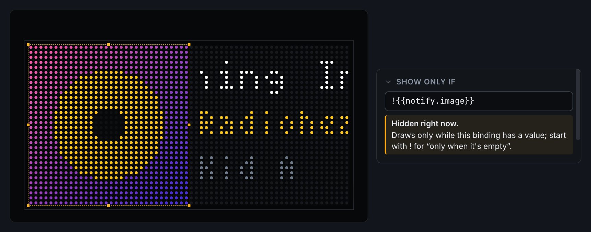
Animating
Animation works like most motion editors. Move the playhead, then change something: if the element is animated, that change becomes a keyframe at the playhead. Press Keyframe to add one by hand. Each keyframe has an easing that shapes the move into it.
- Together or Separate. By default a keyframe records everything about the element at once. Switch an element to Separate to give position, size, colour and opacity their own keyframes and timing, so it can fade on a different beat from the one it moves on.
- Animate… adds ready-made moves: slide in from an edge, drop in, bounce in or fade in at the playhead; slide or fade out at the end of the slide; or blink.
- Transitions play as a slide arrives: cut, crossfade, fade through black, push, cover, reveal, wipe, dissolve or blinds. Each slide sets its own, which plays as it takes over from the slide before.
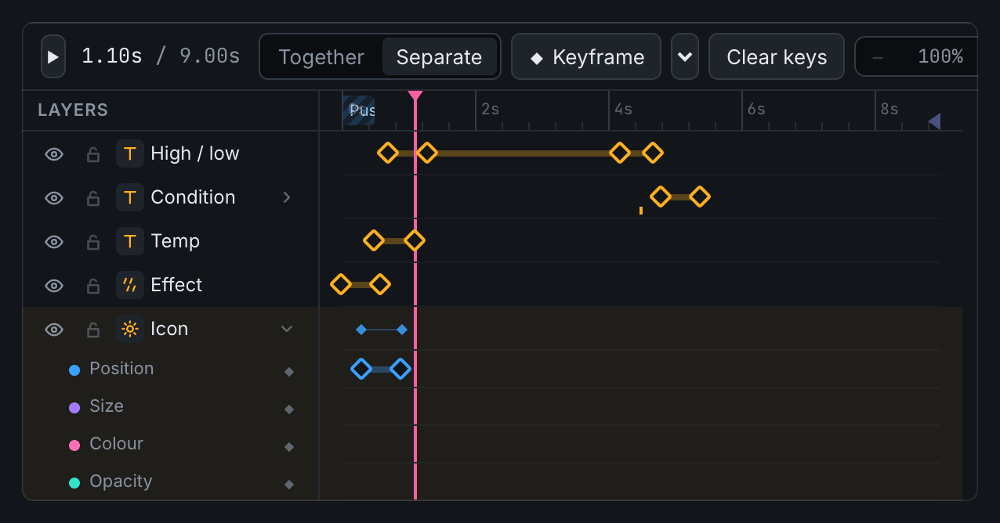
How long a slide plays
Each slide has one of two timings, and the timeline looks different for each.
Fixed length plays for a set time. Key anything anywhere. The optional outro line marks where the exit starts: keys after it stay pinned to the end, so the exit animation survives if you change the slide's length.
Fit to content lasts as long as its data needs. The timeline splits into three parts:
- an In, where things arrive;
- a Hold, where everything sits still while text scrolls or a rotator works through its list, and which stretches or shrinks to suit the data;
- an Out, where things leave.
You animate the In and the Out. The Hold has no keys of its own, so the length of the data can never break the animation. Hold at least stops a slide with little to say from flashing past.
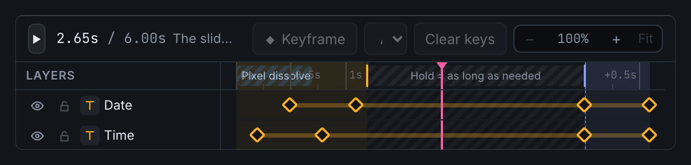
The elements
Text
Text can be static, bound to data, or both: H{{weather.high}}° L{{weather.low}}°. There are about twenty bitmap fonts made for small pixel counts, from tiny 3×5 letters up to big clock digits. Scale draws any font at 2×, 3× or 4×.
When text doesn't fit its box, Overflow decides what happens:
- Clip cuts it off.
- Wrap breaks it onto more lines, between words or anywhere.
- Scroll moves it, either sideways like a ticker or up like film credits.
Scrolling text can loop round continuously, ping-pong back and forth, or go once and stop at the end. You choose when it starts, how long it pauses and how long it rests at the end so it can be read. Text that already fits stays still.
Two settings decide how "once" fits a slide's timing. On a fixed-length slide, Fill the time sets the speed for you, so the text finishes just before the slide ends, however long it is; a maximum speed keeps long text readable. On a slide fitted to its content, the text scrolls at its own speed, and the Hold stretches until it's done, so long headlines get more time.
Wait while animating holds the scroll still while the element itself is moving, so text that slides in doesn't start scrolling halfway through its entrance.
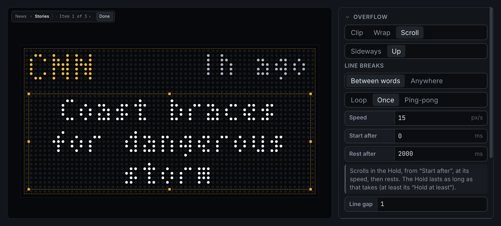
Icon
There are over thirty built-in pixel icons: a full weather set (sun, moon, clouds, rain, snow, thunder, fog, wind), plus arrows, trend triangles, hearts, bells, a calendar, music, mail and a few characters. At 2× and 4× they use detailed hand-drawn art. Tick Blocky for chunky doubled pixels instead.
An icon's name can come from data: {{weather.icon}} follows the weather, and {{clock.icon}} switches between sun and moon at sunrise and sunset. The moon always shows its real phase. Use colour draws an icon in a single colour of your choice.
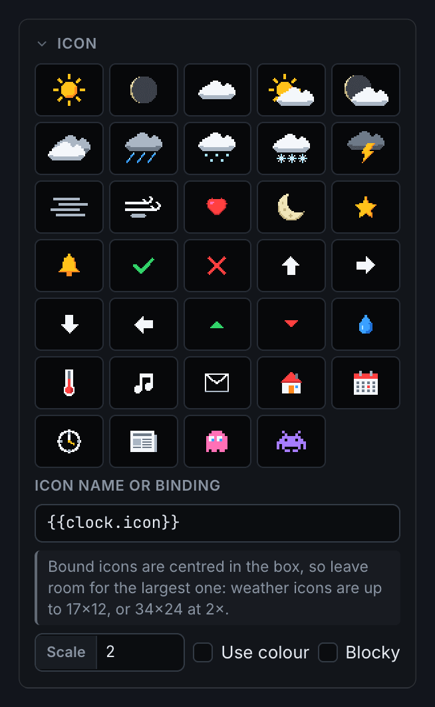
Image
Drop in any image file and it's shrunk to fit the panel. Native size maps one image pixel to one LED. An image can also come from data, such as album artwork from the Mac app or a news site's icon. Tint with colour colours it.
Rectangle, Ellipse and Line
These are the basic shapes. Rectangles and ellipses can be filled or outlined, and rectangles can have rounded corners. A line runs corner to corner across its box, and can be flipped to slope the other way. Animate a shape's box and it becomes a progress bar, a wipe or a reveal.
Sparkline
A small chart of a list of numbers from your data, such as a stock's prices through the day. You can also type numbers in yourself. Draw it as a line, a filled area or bars. It can colour itself up or down, comparing its last value with a baseline such as yesterday's close, which can also be drawn as a line. Draw in traces it from left to right as the slide starts.
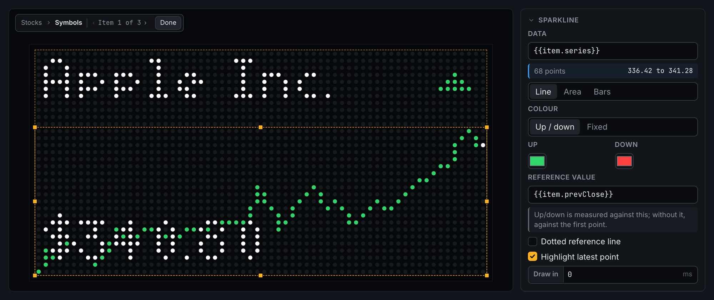
Effect
Ambient weather and sky across its box: rain, snow, stars, drifting clouds or an overcast sky. Set it to From data and {{weather.effect}} picks the right one for the current weather, including stars on a clear night and nothing at all on a plain day.
Density, wind, speed and size change its character. Every showing of the slide gets a different arrangement, so it never repeats exactly.
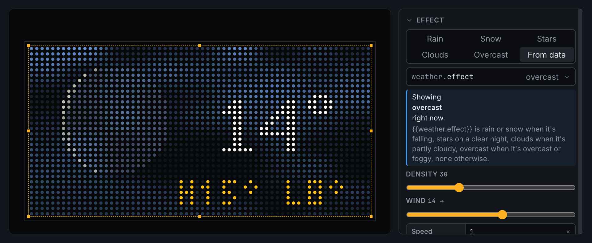
Effects layer like everything else: put clouds above a sun icon and they drift in front of it, or below text and the text stays readable. Particles change every frame, which makes a slide's file bigger for the device. Motion can move them only 10 or 5 times a second to keep files small.
Group
A group bundles elements so you can move, fade or animate them as one. Its contents keep their own animations on the same timeline as the slide. Double-click a group to work inside it. Clip to its box hides anything that pokes outside the group's box, which is handy for a mask or a reveal.
Rotator
A rotator shows a list from your data one item at a time: headlines, stock tickers, calendar events, anything that's a list. You design the item once, and the rotator fills it in for each entry in turn.
Designing the item
Double-click the rotator (or click Edit items) to work inside it. The elements you place there make up one item. Use {{item.…}} fields to fill them: {{item.title}}, {{item.price}}, plus {{index}} and {{count}} for "2 of 5". While you're inside, step through real items with the ‹ › arrows at the top of the stage to check the layout against short and long entries. The drawer at the bottom of the inspector lists the current item's fields.
Two timelines
This is the part worth slowing down for. A rotator has a timeline on the outside, like any element, and one of its own on the inside.
Outside, the rotator is one element on the slide's timeline. You can animate its box like anything else, for example sliding the whole list in at the start of the slide. Its row on the timeline shows each item's turn, so you can see when items change over.
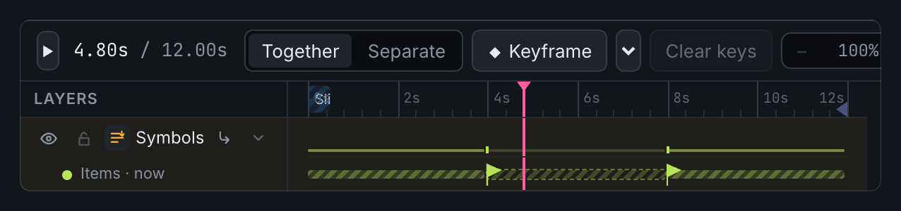
Inside, the timeline belongs to one item. It starts when the item arrives and ends when it leaves, and every item replays it. Keys you add here are your item animation: a headline rising in, a price fading over to its change.
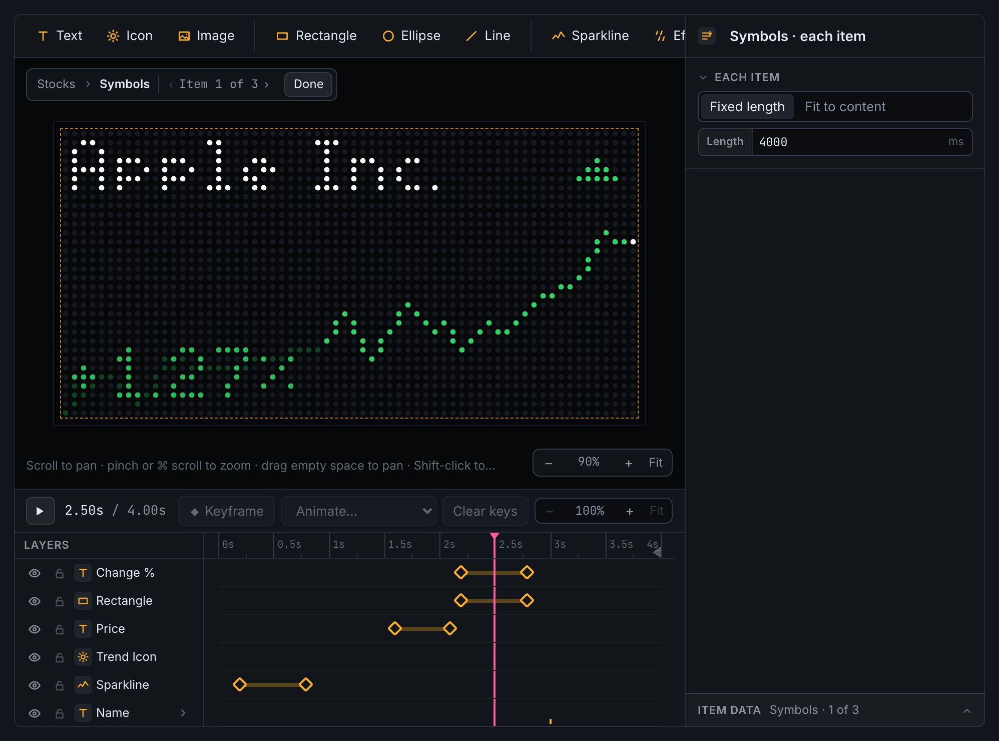
How long each item lasts
It's set inside the rotator, with nothing selected, and works just like a slide:
- Fixed length: every item is up for the same time, keyed anywhere, with an optional outro line.
- Fit to content: each item gets an In, a Hold and an Out. The In and the Out are the same for every item, so its entrance and exit look the same every time. Only the Hold changes, lasting as long as that item needs. A long headline scrolls longer than a short one.
Change-over is how one item hands over to the next: push up, push left, fade or cut. It moves the whole item. For anything fancier, leave it on cut and animate the item's In and Out yourself.
How it fits into the slide
- On a fit to content slide, the slide plays one pass through the list, however long that takes with today's data. This is usually what you want.
- On a fixed-length slide, items take turns until the slide ends. An item that wouldn't finish in time doesn't start; the one before it stays up instead. The rotator warns you when the slide is too short to reach every item.
- Start over after the last item loops the list. Turn it off to stop on the last item.
- The next few shows only one item (or a few) each time the slide comes round, carrying on from where it left off. A news slide can show one fresh headline per pass of the deck.
- Max items limits how many are shown, and When the list is empty sets what to show instead, such as "No meetings today".
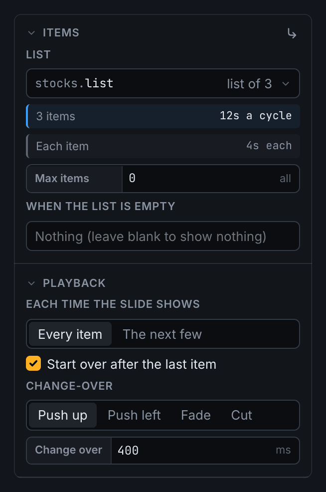
Putting it together
A few patterns that combine the pieces above:
- Weather that knows the time of day. An icon bound to
{{clock.icon}}for the sun or moon, an effect bound to{{weather.effect}}layered just above it, and the temperature on top. - A stock ticker. A rotator over your stocks. Each item has the name, a sparkline of the day's prices coloured up or down, and the price, which fades over to the percentage change halfway through the item. The change takes its colour from data, so it's green when up and red when down.
- Headlines that roll. A rotator over the news, fitted to its content. Each headline is text set to scroll up once, so long stories get more time.
- A fallback for missing data. Two elements in the same spot, one showing only if a field has a value and the other only if it doesn't.
- Slides that come and go. In the Deck tab, Play only when skips a slide while a field is empty, so a calendar slide plays only when there's a meeting coming up.
- Your own notifications. Notifications, Now Playing and Do Not Disturb are slides too. They live in the System tab, and you can redesign them with all the same elements.
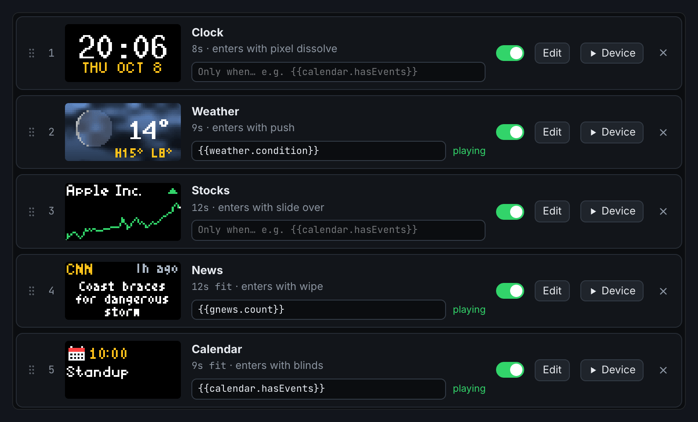